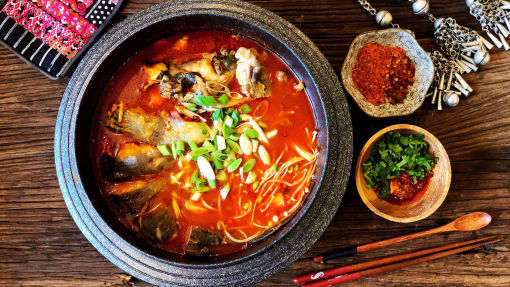
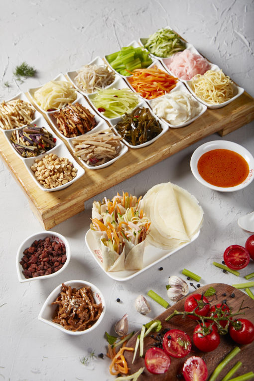
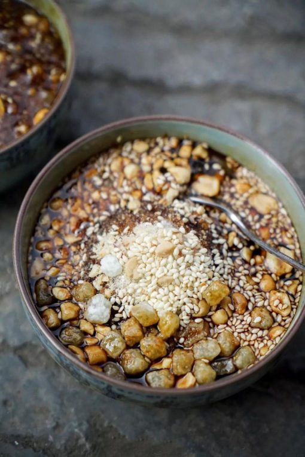

Introduction
Qian (Guizhou) cuisine is one of the main cuisines in China, with more than 250 popular dishes mostly spicy and hot. Guizhou, together with Jiangxi, Hunan, Sichuan, Yunnan, belongs to the well-known chili-eating area in China, so being spicy and hot obviously characterizes Qian (Guizhou) cuisine and local snacks.
Dishes of Qian cuisine are not only spicy and hot but also tasty and delicious. With bright color and beautiful shapes, Dishes of Qian cuisine are also regarded as the fine works of art for appreciation. You can taste every Qian-flavored dish in Guiyang City.
SOUR SOUP FISH
One just cannot visit Guiyang without trying its famous fish in sour soup! This delectable soup is so common and in high demand that it can be had from street stalls. It is THE traditional Maio soup and each Miao family has its own special recipe! But all comes in a large pot and rumour is that Miao girls who don’t know how to make it won’t be able to find a husband.
The story behind the soup is that there once was a pretty brew master in the Miaoling Mountains whose wine was sweet as honey and clear as spring water. She had many suitors and she used to sing, “with love, water can become sweet wine; without love, sweet wine will turn sour.” If she didn’t like her suitors, she would serve them sour wine.
The soup can come in a red or white soup base. The red base is from fermented wild tomatoes and the white, fermented rice. The fish is boiled in the soup base with garlic, ginger, salt, chili, wine and special fragrant spices. Tofu and vegetables are usually added to the pot just before serving.


SI WA WA
SI WA WA, also known as plain spring rolls, are one of the common local traditional snacks in Guiyang. As long as it is visible in every street around Guiyang. The vegetable is crisp and tender, hot and sour, refreshing, appetizing and spleen. At first glance, it seems that the newborn baby in the delivery room is wrapped in a "swaddling clothes." "swaddling clothes" is a pancake made of rice flour, thin as paper but only as big as a palm. Then roll into shredded radish, folded ear root (fish coriander), shredded kelp, fried soybeans, crispy whistle, paste pepper, etc. When locals eat, of course, infuse hot and sour juice. This dip in water is the essence of SI WA WA. Many SI WA WA snack stalls in Guiyang, the capital of Guizhou Province, are mostly set along the street, with one or twenty varieties. The shreds are very finely cut, and the colors of red, white, yellow, and black are very beautiful. Vegetarian dishes are crisp and tender, hot and sour, refreshing, appetizing and spleen. Guiyang specialty is a famous snack popular in all parts of Guizhou.
LEARN MOREGao Ba Porridge
"Gao Ba Porridge" is a Han-style snack in Guiyang, Guizhou. It is a combination of "cake" and "porridge". There are round and square shapes, like snowy foam, delicate cake fillings, and materials such as roses and sesame, which are sweet and delicious. Paired with simmered rice flour or simmered rice flour with boiling water, it forms the "cake and rice gruel" that locals love. Gao Ba Porridge is a special snack in Qingyan Ancient Town, south of Guiyang City. Quite different from other Guiyang cuisines, cakes and gruels do not contain spices such as pepper. In fact, its biggest role is to keep other "spicy foods" from hurting the stomach. Gao Ba Porridge is a famous snack from Qingyan, which has been passed down for hundreds of years. Rice cakes and porridge, light aroma, sweet but not greasy, spleen and health, suitable for young and old.
LEARN MORE
More Foods in Guiyang
Guiyang Barbeque
Guiyang barbecue uses fresh beef, skewers on iron skewers, roasted with spices, and then puts in the prepared Houttuynia sauce and wraps the sauce to continue to roast, it tastes very delicious
LEARN MOREStinky Tofu
Stinky tofu, a traditional Chinese snack, is very different in the way it is made and eaten in different places. There are different types in the North and the South. Although its name is tacky, it is ugly and ugly inside, strange in the ordinary, and has a long history. It is a very traditional Chinese snack with ancient characteristics and tradition. Production materials include soybeans, soya bean paste, soda ash and so on.
Chang Wang Noodles
The origin of Guiyang Chang Wang Noodles is Guiyang, which began in the Qing Dynasty and is prosperous in modern times. It has a long history and is one of the characteristic snacks that are well-known in Guiyang. At the same time, coupled with careful selection of materials, sophisticated production technology, unique flavors, and popular prices, it has been loved by the majority of Guiyang citizens, and its taste has remained unchanged for 100 years.
LEARN MOREFried Tofu Ball
Fried Tofu Ball is a traditional snack of the Han nationality in Guiyang City. It uses sour soup tofu as the main material. The cooking method is mainly soft fried, and the taste belongs to home flavor. The production process of tofu dumplings is very unique. The broken tofu is made into an oval shape by hand, and fried in a high-temperature oil pan. There are more than ten kinds of spices, such as spring onion, ginger, etc., which are made of paste pepper water. The taste is spicy and tender, suitable for all ages.
LEARN MORESour Soup Fish Restaurant Recommendation
Liang Huan Zhai
SI WA WA Restaurant Recommendation
YANG YI MA
Gao Ba Porridge Restaurant Recommendation
Xiejia Centennium Gaoba
.jpg)